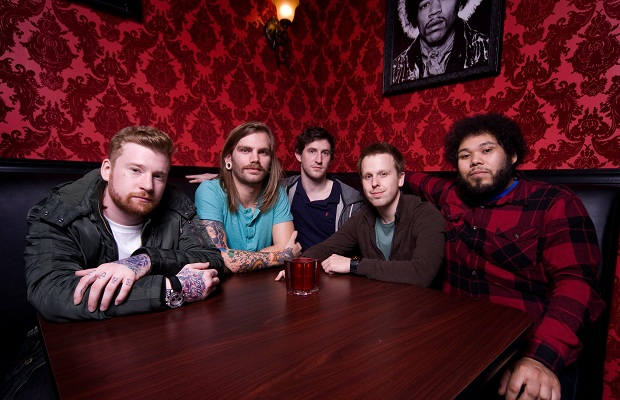
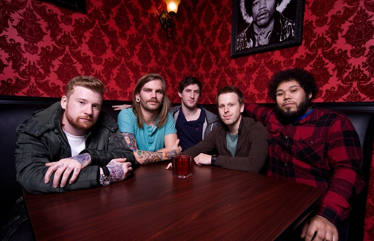
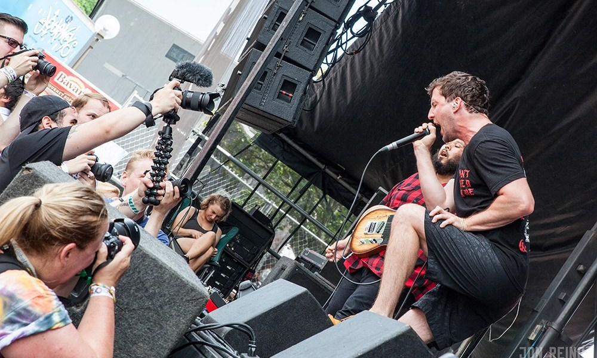
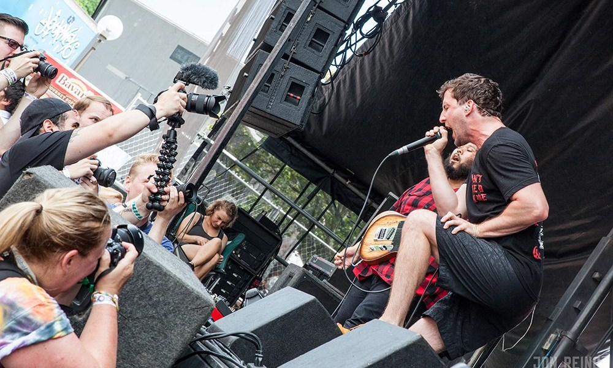

Dance Gavin Dance History
-
2005: The band is formed with guitarist Will Swan, drummer Matt Mingus, unclean vocalist John Mess, clean vocalist Jonny Craig, and bassist Eric Lodge
and self-released their debut extended play (EP), Whatever I Say Is Royal Ocean.
-
2006: Whatever I say Is Royal Ocean is re-released on Rise Records on November 14th.
-
2007: Their debut studio album, Downtown Battle Mountain, produced by Kris Crummett, was released on May 15 on Rise Records.
It was also this year in August 2007, guitarist Sean O'Sullivan departed from the group and was replaced by Zachary Garren.
In November 2007, singer Jonny Craig had left the group due to a heated argument between himself and the band's manager.
-
2008: Kurt Travis joins as the new clean vocalist. On April 20, 2008, the group entered the studio to record their self-titled second studio album with Kris Crummett and
is later released on August 19. Prior to the release of the album, but following its recording sessions, two original members, unclean vocalist Jon Mess and bassist Eric Lodge, departed from the band.
Following their respective departures, Will Swan pursued screaming vocal duties along with performing lead guitar, and Jason Ellis replaced Lodge on bass guitar.
The group filmed a music video for the song "Me and Zoloft Get Along Just Fine", with director Robby Starbuck, which was released November 18.
-
2009: In February, the band went into the studio as a five-piece to record the follow-up to their self-titled album, yet again with producer Kris Crummett.
The resulting album, Happiness, was released on June 9. Bassist Jason Ellis appears on Happiness, however left the group before its release, subsequently being replaced by Tim Feerick as a touring member.
-
2010: On February 10, 2010, guitarist Zachary Garren was allegedly ousted by the band due to personal conflicts with other members.
Dance Gavin Dance played the Soundwave festival as scheduled as a four-piece with Swan handling all guitar duties and Kurt Travis playing keyboards.
Jon Mess and Eric Lodge officially rejoined the band in mid-2010. Josh Benton, former guitarist and bandmate of Kurt Travis in No Not Constant, took up guitar duties.
In August Alternative Press said singer Kurt Travis and Dance Gavin Dance had officially parted ways in order for Jonny Craig to rejoin the band.
Former guitarist Sean O'Sullivan rejoined the band for several home shows towards the end of 2010, returning the band to their Downtown Battle Mountain line-up.
-
2011: On March 8, the band released Downtown Battle Mountain II.In March 2011, the band began their U.S. tour with Iwrestledabearonce, In Fear And Faith, and Just Like Vinyl, followed by a small European tour,
culminating in two shows in London playing the original Downtown Battle Mountain in full on the first night and Downtown Battle Mountain II in full on the second night.
The band also played at the 2011 Vans Warped Tour. In an April 2011 interview with Mind Equals Blown, drummer Matt Mingus stated the band plans to release another album with the current, reunited lineup.
On August 20, 2012, Jonny Craig announced his departure from the band.[
-
2012: On August 21, 2012, Dance Gavin Dance announced Craig's departure via Facebook. Tilian Pearson, formerly of Tides of Man, was asked to replace Craig as clean vocalist during the making of his solo album, Material Me (2013).
Pearson, along with guitarist Josh Benton and bass guitarist Tim Feerick, were confirmed as official members by Jon Mess.
-
2013: The band's fifth album, Acceptance Speech, was released on October 8, 2013 with Rise Records. The album was produced by Matt Malpass. Shortly after the shooting of their music video for their single "Strawberry Swisher Pt. 3",
Josh Benton parted ways with the band in order to focus on his career as an audio engineer and producer.
Aric Garcia of post-hardcore band Hail the Sun replaced Benton for The Acceptance Speech Tour and The Rise Records tour. On September 17, Dance Gavin Dance released a b-side from Acceptance Speech, entitled "Pussy Vultures".
-
2014: On October 29, 2014, producer Kris Crummett announced that recording sessions for the band's sixth studio album were completed. In place of former member Josh Benton, Strawberry Girls and former Dance Gavin Dance guitarist Zachary Garren, Secret Band guitarist Martin Bianchini,
and Hail the Sun guitarist and touring member Aric Garcia contributed their respective guitar parts on the album.
-
2015: On February 6, 2015, Rise Records released a teaser for the new album Instant Gratification, which was later released on April 14, 2015. On February 12, 2015, the band released the lead single, "On the Run". The second single, "We Own the Night", was released on March 12, 2015.
The music video for "We Own the Night" was uploaded to the official Rise Records YouTube channel on May 7, 2015.
On April 2, the band premiered the music video for the song "Stroke God, Millionaire". On February 19, 2015, the band's guitarist Will Swan published a post on Facebook revealing that the guitar pedalboard he uses to perform live with Secret Band, Dance Gavin Dance, and Sianvar was stolen at a show of February 14 on The Blue Swan Tour.
He launched a GoFundMe account and asked fans to donate $2,500 to help purchase a replacement pedalboard.[18] The fund reached its goal within three hours of its launch.
Dance Gavin Dance toured as a supporting act on the Take Action! Tour with Memphis May Fire, Crown The Empire, and Palisades from March 10 to April 4, 2015.[19] In support of Instant Gratification, the band announced the Instant Gratification Tour, which took place from April 14 to May 8, 2015,
across North America with supporting acts Polyphia, Hail The Sun, and Stolas. The band embarked on their headlining Australia tour from May 14 to 23, 2015, with opening acts Arcasia.[20] In celebration of the band's 10th anniversary, Dance Gavin Dance embarked on the 10 Year Anniversary tour with supporting acts A Lot Like Birds, Slaves, Dayshell,
and Strawberry Girls from November 14 to December 19, 2015, in North America.[21]
On December 23, 2015, Rise Records revealed that Dance Gavin Dance were to release their upcoming seventh studio album the fall of 2016.
-
2016: The band performed at So What Music Festival in Grand Prairie, Texas on March 20, 2016.[23] They also performed at the Extreme Thing Sports & Music Festival in Las Vegas, Nevada on April 2, 2016, with other bands such as Saosin, the Story So Far, the Maine, Mayday Parade, among several others.[24]
On March 2, 2016, the band announced their live studio album, Tree City Sessions, which was released on May 13, 2016. The album contains 12 live recorded songs performed in Sacramento, California at the Pus Cavern Studios. On May 10, 2016, the band announced the U.K. leg of their 10th anniversary tour that included vocalists Tilian Pearson, Kurt Travis, and Jonny Craig.[25] On July 11, the group announced their U.S. fall tour which took place from September 22 to October 27, 2016.[26]
On July 27, 2016, the band announced their seventh studio album, Mothership, with a scheduled release date of October 7, 2016. The lead single, "Chucky Vs. the Giant Tortoise", was released on August 18, 2016. The music video for "Betrayed By The Game" was released on September 16, 2016, and the music video for "Young Robot" was released on September 27, 2016. In support of the album, the band embarked on The Mothership Tour with supporting acts The Contortionist, Hail the Sun, Good Tiger, and The White Noise, which took place from September 22 to October 27, 2016.[27]
Dance Gavin Dance embarked on the European leg of their 10-year anniversary tour from November 3 to 26, 2016.[28] The band embarked on a tour with American rock bands CHON and Eidola in February and March, entitled The Robot with Human Hair Vs. Chonzilla Tour.
-
2017: On June 1, 2017, the band released a studio cover of the Bruno Mars single "That's What I Like" on YouTube.[29] On June 15, 2017, they released the stand-alone single "Summertime Gladness."[30] The group toured on the Journey's Right Foot Stage on the Vans Warped Tour from June to August.
On October 4, 2017, the band announced a U.S. tour, consisting of the group performing their seventh studio album Mothership in its entirety through December, with support from Polyphia, Icarus the Owl, and Wolf & Bear.
On October 17, 2017, the band announced that recording of their upcoming eighth studio album had begun and that the album should expect a release date of summer 2018
-
2018: The band embarked on a headlining European tour from March 3 to 22, 2018, with Veil Of Maya and Thousand Below as support.[33] The band announced their eighth studio album, Artificial Selection, on March 23, 2018.[34] The band released the lead single off the album, "Midnight Crusade", on April 4, 2018, accompanied with its music video.
On May 3, 2018 the band released the song "Son of Robot". They released the song "Care", accompanied by a music video, on May 24, 2018. "Count Bassy" and its music video were released three days prior to the album on June 5, 2018.
In support of the album, the band supported American post-hardcore band Underoath on two 2018 tours
-
2019: embarked on their headlining Artificial Selection Tour, with Periphery, Hail the Sun, and Don Broco, in 2019. The band held their first annual SwanFest on March 30, 2019 at the City National Grove of Anaheim in Anaheim, California.
A new single, "Head Hunter", was released on March 22, 2019.[35] The band's clean vocalist Tilian Pearson confirmed that Dance Gavin Dance will release their ninth studio album in 2020, with new singles coming out in 2019.[36]
On August 30, 2019, the band released Acceptance Speech 2.0, a remaster of their fifth studio album Acceptance Speech.[37]
Another single, "Blood Wolf", was released on October 11, 2019.[38] It became the band's first career charting single, debuting at number 24 on the Billboard Hot Rock Songs chart.
A spring tour was announced on November 12, scheduled to take place from March 12 to April 25, 2020 with support from Animals As Leaders, Veil of Maya, Royal Coda, and a yet to be announced "mystery band."
On December 12, 2019, frontman Tilian Pearson revealed Issues would be joining as the “mystery band,” giving them the seal of approval by saying he's “been a fan for a while now.
-
2020: On March 12, 2020, the band announced that they had cancelled all tour dates on the 2020 spring tour due to the COVID-19 pandemic with plans to reschedule.[41] On March 24, the band announced the rescheduled tour dates under the name The Afterburner Tour, scheduled to take place in August and September 2020.
On February 21, 2020, the band announced that their ninth studio album, Afterburner, would be released on April 24, 2020. The lead single, "Prisoner", was released on the same day along with its music video.[42] Another single, "Strawberry's Wake", was released on March 12, 2020, along with its music video.
The music video for the single "Lyrics Lie" was released on April 9, 2020.[44] The single "Three Wishes" was released on April 16, 2020, along with its music video. The video features fan submissions based on the theme of "clean".[45]

 

 
